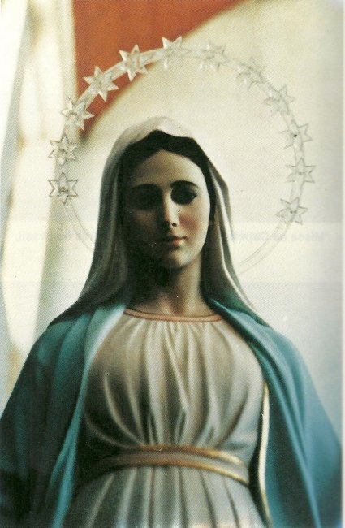

PRELÚDIO
O infinito e
misericordioso Amor de DEUS sempre se manifesta de modo profundo, carinhoso e
paternal na 
Todos nós, somos criaturas idealizadas na imensidão do Coração Divino, que tivemos a felicidade de nascer para vida, caminhando ao longo dos nossos dias no cumprimento de uma missão terrestre, que o próprio DEUS nos concedeu. Junto com o "dom da vida" o SENHOR inseriu em cada um, o desejo de exercitar os maravilhosos dons que ELE derramou em nossa alma, a fim de que as pessoas tenham meios de santificar a sua existência, transformando-se em verdadeiros filhos de DEUS. E esse precioso "dom Divino" concedido a nossa alma, também nos estimula e nos torna aptos a edificar um confortável caminho de amizade e de amor com NOSSO SENHOR, construindo desde já, um bem dimensionado espaço onde um dia habitará o nosso espírito, na almejada e tão feliz eternidade no Paraíso Divino.
Para testemunhar o interesse do CRIADOR pela humanidade que ELE Mesmo inventou, encontramos desde o Antigo Testamento informações seguras e inquestionáveis, sobre as manifestações sobrenaturais que aconteceram com o objetivo de despertar as pessoas do marasmo da indiferença, do exercício da concupiscência, da volúpia do consumismo, do cultivo da terrível vaidade, para as realidades da paz interior e do bom viver quotidiano. Isto com a intenção única de converter o coração humano, fazendo com que cada criatura cultive em plenitude o Mandamento do Amor, sobretudo, confirmando que DEUS é PAI e CRIADOR, que jamais abandonará a Sua Criação, que ELE criou com imenso carinho e infinito amor.
Ao longo dos anos, aconteceram mais de uma centena de Aparições e Manifestações Sobrenaturais de Emissários Celestes, a serviço do SENHOR, onde as Visitas da VIRGEM MARIA despontam com grande evidência e com ocorrências que marcaram de modo indelével a sensibilidade do coração cristão e a expectativa de todos aqueles que amam e acreditam em DEUS. É o esforço Divino excedendo em carinho e ternura para despertar os seus filhos para o verdadeiro amor e o cultivo da paz.
Todavia, como sempre aconteceram, as gerações da humanidade nunca pensaram e nem procederam de maneira uniforme, com calorosa e fervorosa receptividade, em relação às Aparições e a tudo o que se manifesta superior à natureza. A humanidade na sua maioria, sempre se mostrou indiferente, mesmo diante de notáveis fatos que sem dúvida, estão acima da essência e do agir das criaturas, e que por isso mesmo, revelavam-se como acontecimentos extraordinários, indubitavelmente ligados à ação da Graça Divina.
Evidentemente, aqueles que acreditam sempre exultaram de alegria e queriam saber cada vez mais e conseguir outras notícias sobre os fenômenos ou presenciar os fatos que ocorriam, para o seu júbilo e completa satisfação interior. Entretanto, os que não acreditam, sempre continuam de espírito fechado, e assim, não recebem as dádivas que DEUS derrama diariamente sobre todas as gerações, e primordialmente, não consegue estabelecer uma defesa para impedir o maligno de edificar terríveis baluartes no seu interior, implantando um abominável espírito, contrário as manifestações sobrenaturais, e atuando ferozmente contra o Amor de DEUS.
Assim aconteceu em Mediugórie, um pequeno lugarejo na Herzegovina, a sudeste da Itália, separada pelo Mar Adriático e ligada territorialmente a Croácia, e a leste com Montenegro, ao norte e a oeste com a Bósnia.
Lá a partir do ano de 1981, NOSSA SENHORA apareceu diariamente a seis (6) jovens, concedendo-lhes preciosos e carinhosos conselhos, além de renovar enfaticamente a mesma mensagem Divina que Ela havia transmitido a Irmã Lúcia em Fátima, no ano de 1917, para que a mensagem fosse novamente divulgada a todas pessoas, dizendo: “Não pequem mais, convertam o coração, porque DEUS já está muito ofendido com a humanidade”.
As Aparições movimentaram o mundo cristão e logo aconteceram às peregrinações, com pessoas vindas de todas as partes do mundo, que lá queriam rezar, sentir o prazer de estar no mesmo lugar onde a MÃE DE DEUS aparecia, assim como, presenciar o fervor incandescente da fé que vigorosamente brotava de todos os corações. E não só eram civis e pessoas leigas, mas bispos, padres em quantidade, irmãs, religiosos de uma infinidade de Ordens, todos entusiasmados e repletos de emoção, unidos pelo mesmo prazer e a alegria de estar em Mediugórie.
Por outro lado, a reação comunista que dominava o país foi imediata e violenta, e quis acabar com “aquele foco rebelde” de uma vez, perseguindo os videntes e aqueles que os apoiavam, aplicando duros métodos de repressão e fazendo grande movimentação militar.
Mas não conseguiram nem diminuir e nem assustar o entusiasmo daquela gente. E por isso, na continuidade das operações repressivas, para evitar consequências que seriam danosas a todos, os “chefes vermelhos” acabaram por decidir aliviar a resistência oficial.
Mediugórie está na região da Erzegovina croata, que possui uma montanha bem alta denominada Krisevac (Montanha da Cruz), assim denominada porque os paroquianos em 1933 nela construíram uma grande Cruz de concreto armado, para comemorar os 19 séculos da Morte e Ressurreição de NOSSO SENHOR JESUS CRISTO. Ao lado da montanha tem um Monte mais baixo que chamam de Podbrdo (pé da Colina), agora conhecido como “Colina das Aparições” . E no sopé dessa colina, encontra-se a Vila Biakovici.
Então, Mediugórie, Biakovici, Miletina, Vionica e Surmanci, são pequenos vilarejos situados no mesmo vale, os quais, pertencem administrativamente ao Município de Citluk, tendo como centro a Igreja de São Tiago, localizada em Mediugórie, inaugurada em 1969 e dirigida pelos Padres Franciscanos. Esta Paróquia, pertence à Diocese de Mostar.
Esta é a localização da região e das áreas aonde aconteceram as Aparições da VIRGEM MARIA.
Nós do APOSTOLADO DOS SAGRADOS CORAÇÕES, temos o prazer e a honra de lhes apresentar esta preciosa obra de nossa MÃE SANTÍSSIMA, evidenciando esta admirável e Santa Presença em Mediugórie, primordialmente, com o objetivo de divulgar e ajudar no conhecimento desta comovente manifestação Divina, que com tanto carinho e imenso amor maternal, NOSSA SENHORA veio reavivar no coração da humanidade, o caminho do amor, a necessidade da harmonia existencial, para que possa florescer a Paz de DEUS e a felicidade nos corações.
APOSTOLADO DOS SAGRADOS CORAÇÕES
http://www.apostoladosagradoscoracoes.com/